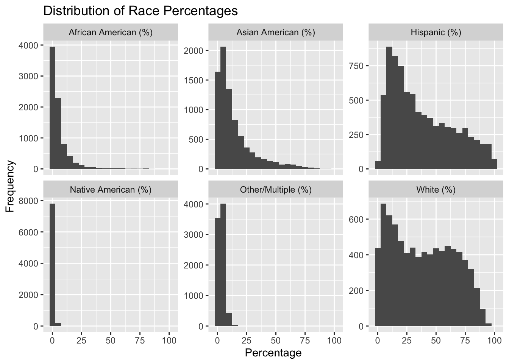
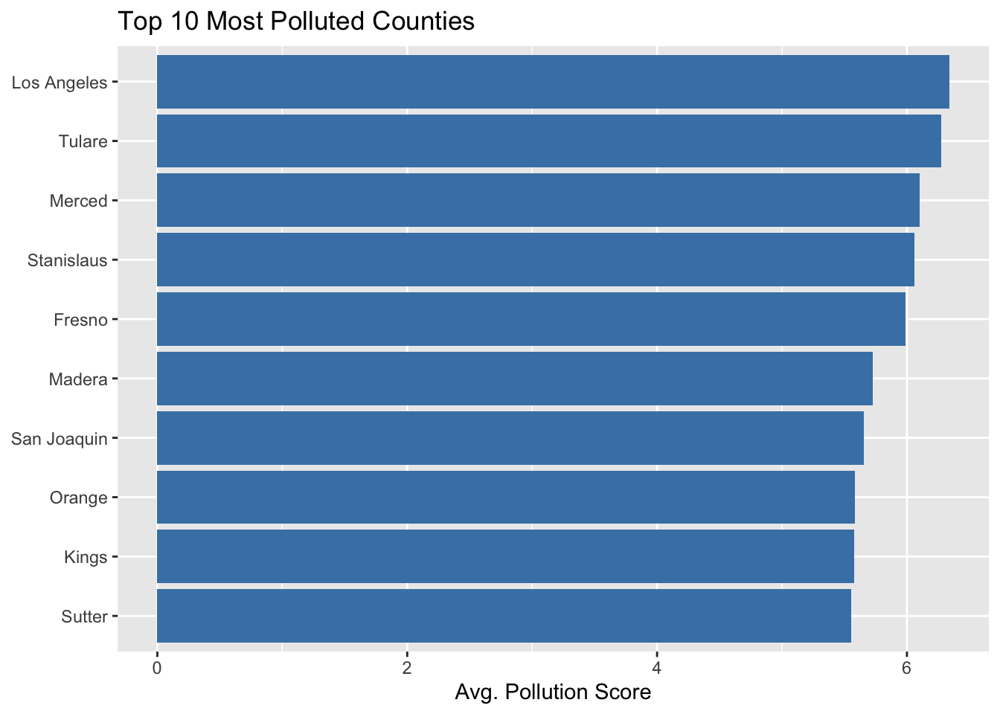
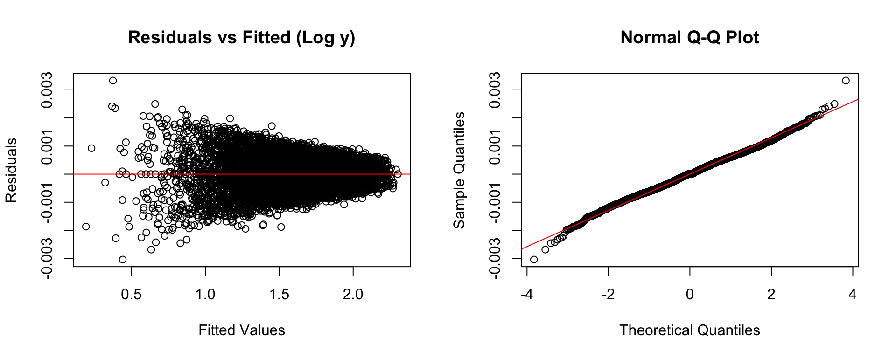

Analysis
Here we provide a detailed analysis using more sophisticated statistics techniques.
We describe here our detailed data analysis. This page will provide an overview of what questions you addressed, illustrations of relevant aspects of the data with tables and figures, and a statistical model that attempts to answer part of the question. You’ll also reflect on next steps and further analysis.
The audience for this page is someone like your class mates, so you can expect that they have some level of statistical and quantitative sophistication and understand ideas like linear and logistic regression, coefficients, confidence intervals, overfitting, etc.
While the exact number of figures and tables will vary and depend on your analysis, you should target around 5 to 6. An overly long analysis could lead to losing points. If you want you can link back to your blog posts or create separate pages with more details.
The style of this paper should aim to be that of an academic paper. I don’t expect this to be of publication quality but you should keep that aim in mind. Avoid using “we” too frequently, for example “We also found that …”. Describe your methodology and your findings but don’t describe your whole process.
Rubric: On this page
You will
- Introduce what motivates your Data Analysis (DA)
- Which variables and relationships are you most interested in?
- What questions are you interested in answering?
- Provide context for the rest of the page. This will include figures/tables that illustrate aspects of the data of your question.
- Modeling and Inference
- The page will include some kind of formal statistical model. This could be a linear regression, logistic regression, or another modeling framework.
- Explain the ideas and techniques you used to choose the predictors for your model. (Think about including interaction terms and other transformations of your variables.)
- Describe the results of your modelling and make sure to give a sense of the uncertainty in your estimates and conclusions.
- Explain the flaws and limitations of your analysis
- Are there some assumptions that you needed to make that might not hold? Is there other data that would help to answer your questions?
- Clarity Figures
- Are your figures/tables/results easy to read, informative, without problems like overplotting, hard-to-read labels, etc?
- Each figure should provide a key insight. Too many figures or other data summaries can detract from this. (While not a hard limit, around 5 total figures is probably a good target.)
- Default
lmoutput and plots are typically not acceptable.
- Clarity of Explanations
- How well do you explain each figure/result?
- Do you provide interpretations that suggest further analysis or explanations for observed phenomenon?
- Organization and cleanliness.
- Make sure to remove excessive warnings, hide all code, organize with sections or multiple pages, use bullets, etc.
- This page should be self-contained, i.e. provide a description of the relevant data.
Introduction
Motivation
The analysis aims to investigate the relationship between demographic factors (e.g., race, ethnicity) and pollution burden in California’s census tracts. Understanding these relationships is essential for targeting environmental policies that mitigate pollution’s impact on vulnerable communities. By examining how demographic characteristics influence the pollution burden, we can highlight areas that may need focused intervention to reduce environmental inequities.
Key Questions
We are particularly interested in understanding how the proportion of Hispanic, African American, and Asian American populations within census tracts correlates with the pollution burden score. Specifically, we seek to answer the following questions:
How does the percentage of each racial/ethnic group (Hispanic, African American, Asian American, etc.) correlate with the pollution burden score in California census tracts?
Are certain demographic groups more likely to live in high-pollution areas?
To explore these questions, we present visualizations and statistical models that analyze these relationships. The following figures and tables will provide insights into the distribution of demographic groups, the extent of pollution in different counties, and the impact of racial composition on pollution levels.
Data Overview and Inital Exploration
Data Visualization
For each census tract, races that are non-white tend to have smaller population percentages that are less than 25% of the census tract.
Pollution vs. Race

Top 10 Most Polluted Counties



Modeling and Inference

Models
Full Model on Original Data
We begin with a linear model that includes all predictors without transformation.
Residual Diagnostics

These plots indicate non-normal residuals and possible heteroscedasticity, suggesting that transformation may improve model fit.
Log Transformation of Response
To address non-constant variance and skewness in the response, we log-transform the Pollution Burden Score.
Residual Diagnostics

Some improvement is seen, but the residual patterns still suggest potential nonlinearity in predictors.
Log-Log Model
We apply a log transformation to both the response and log-safe numeric predictors.
| Statistical Performance | |||||||
|---|---|---|---|---|---|---|---|
| r.squared | adj.r.squared | sigma | statistic | p.value | df | AIC | BIC |
| 1.0000 | 1.0000 | 0.0006 | 2,323,930.4996 | 0.0000 | 826.0000 | −91,476.0497 | −85,713.2077 |
Residual Diagnostics

The log-log model displays better residual behavior and improved normality, supporting its use moving forward.
Multicollinearity Check
We assess multicollinearity among predictors using Variance Inflation Factors (VIF).
| Variables with High Multicollinearity (GVIF > 5) | |||
|---|---|---|---|
| Variable | GVIF | Df | GVIF^(1/(2*Df)) |
Predictors such as demographic percentages and county indicators show high VIFs, indicating multicollinearity. We consider transformation and selection to reduce redundancy.
| Statistical Performance | |||||||
|---|---|---|---|---|---|---|---|
| r.squared | adj.r.squared | sigma | statistic | p.value | df | AIC | BIC |
| 0.8600 | 0.8597 | 0.0213 | 3,078.2799 | 0.0000 | 16.0000 | −39,052.5265 | −38,926.6783 |
Variable Selection
We compare backward selection and forward selection based on AIC.
Backward Selection
| Statistical Performance: Backward Model | |||||||
|---|---|---|---|---|---|---|---|
| r.squared | adj.r.squared | sigma | statistic | p.value | df | AIC | BIC |
| 0.8600 | 0.8597 | 0.0213 | 3,518.1434 | 0.0000 | 14.0000 | −39,055.0175 | −38,943.1525 |
Forward Selection
Backward selection slightly outperformed forward selection:
- AIC (Backward): -61859.36
- AIC (Forward): -61856.87
Both models had the same Adjusted R² (≈ 0.8597), but the backward model: - Used fewer predictors (14 vs. 16), - Removed two unhelpful variables (PM2.5, Low Birth Weight), - Is thus more parsimonious and interpretable.
We select the backward model as our final model.
Final Model Summary
Our final model includes key environmental and demographic factors, along with county fixed effects:
| Backward Model Coefficients | ||||||
|---|---|---|---|---|---|---|
| Estimates with 95% Confidence Intervals | ||||||
| term | estimate | std.error | statistic | p.value | conf.low | conf.high |
| Intercept | 2.675 | 0.036 | 74.803 | 0.000 | 2.605 | 2.745 |
| Ozone | 2.319 | 0.061 | 38.165 | 0.000 | 2.199 | 2.438 |
| `Diesel PM` | 0.159 | 0.002 | 64.709 | 0.000 | 0.154 | 0.164 |
| Traffic | −0.001 | 0.001 | −1.427 | 0.154 | −0.003 | 0.000 |
| `Cleanup Sites` | 0.011 | 0.000 | 37.369 | 0.000 | 0.010 | 0.011 |
| `Haz. Waste` | 0.030 | 0.001 | 39.598 | 0.000 | 0.029 | 0.032 |
| `Solid Waste` | 0.019 | 0.001 | 32.375 | 0.000 | 0.018 | 0.020 |
| Asthma | −0.032 | 0.002 | −14.390 | 0.000 | −0.036 | −0.027 |
| `Cardiovascular Disease` | −0.027 | 0.003 | −8.795 | 0.000 | −0.032 | −0.021 |
| `Children < 10 years (%)` | −0.031 | 0.002 | −16.300 | 0.000 | −0.034 | −0.027 |
| `Elderly > 64 years (%)` | −0.007 | 0.001 | −6.333 | 0.000 | −0.010 | −0.005 |
| `Hispanic (%)` | −0.071 | 0.005 | −13.261 | 0.000 | −0.081 | −0.060 |
| `African American (%)` | −0.018 | 0.001 | −33.186 | 0.000 | −0.019 | −0.017 |
| `Asian American (%)` | 0.006 | 0.000 | 12.477 | 0.000 | 0.005 | 0.007 |
| `White (%)` | −0.020 | 0.001 | −36.724 | 0.000 | −0.021 | −0.019 |
This model strikes a balance between interpretability and predictive power, with improved residual diagnostics and lower AIC compared to the full model.
Limitations and Assumptions
As with any linear regression analysis, our model relies on several assumptions: linearity between predictors and response, homoscedasticity (constant variance), independence of observations, and normality of residuals. While the log-log transformation improved residual behavior, some mild skewness and heteroscedasticity may remain. Furthermore, multicollinearity among demographic variables was mitigated but not eliminated entirely.
Additionally, this analysis does not account for potential spatial correlation between neighboring tracts or time-varying pollution dynamics. Including temporal or spatial random effects, or using generalized additive models, could improve the robustness of our findings. Incorporating socioeconomic indicators such as income, education, and housing density would also enhance our understanding of environmental inequity.